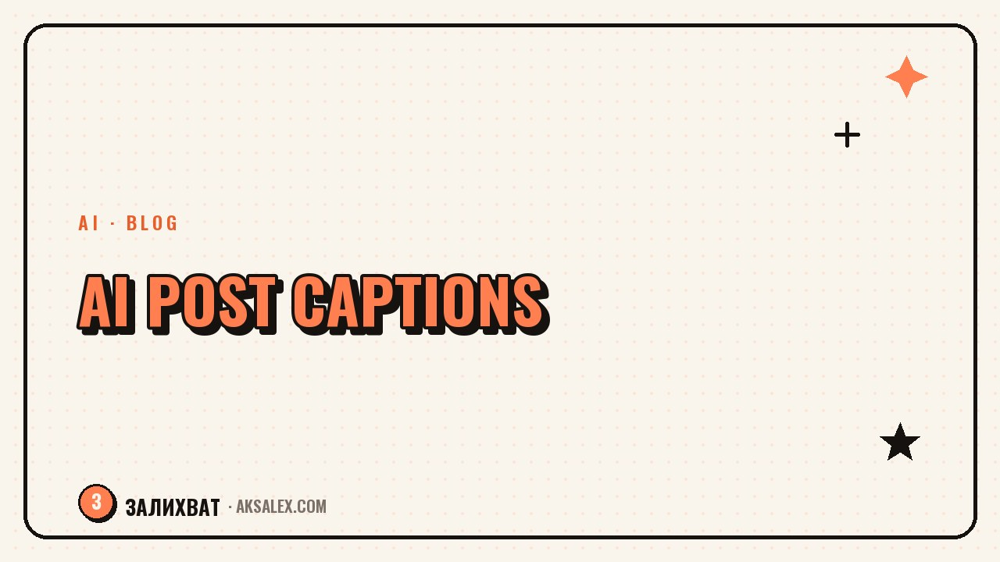

AI for Writing Post Captions

Why hand your post captions to AI at all
The caption isn't the main element of a post, but it's often what decides whether people watch the video through and leave a comment. Writing dozens of captions by hand eats up time you could spend filming or editing.
AI handles the routine part well - structure, options for the first line, questions that pull people into the comments. Your part of the job is to steer it and cut whatever doesn't sound like you.
How to build a prompt that works for a caption
A vague prompt like "write a caption for a video about AI" almost always gives a generic, faceless text. The more specific the inputs, the closer the result to what you actually want to publish.
What to include in the prompt
- The video's topic and main idea in one or two sentences
- The tone of delivery - personal, expert, humorous
- The length of the post and whether there's a character limit
- Whether you want a question for the comments at the end
Post formats and when to use each
Different types of posts solve different tasks, and AI is easier to steer if you already know which format you need.
| Post format | When to use | What to watch for |
|---|---|---|
| Short caption | The video already explains the point itself | The first line has to hook on a phone |
| Long-form text | The topic needs explanation or context | Don't stretch the intro, get to the point fast |
| List post | Practical advice in several points | Each point is a complete thought with no fluff |
| Personal story | You want to show yourself, not just the topic | Keep the vivid details, don't let AI smooth them out |
AI will write a polished text. What makes it alive are the details that exist only in your story.
What to polish by hand after AI
An AI draft is rarely ready to publish without edits. Most often it has phrases that are too smooth, generic wording, and clichés you'd find in any other text on the same topic.
It helps to read the text out loud - if a phrase sounds unnatural when you say it, it will most likely sound unnatural to the reader too. It's also worth adding concrete details from your own experience - that's exactly what sets the text apart from a generic one.
Common mistakes when working on captions with AI
The main mistake is publishing the first version without edits. AI doesn't know your voice or your followers' context, so the text comes out correct in structure but faceless in substance.
- Copying the text without adapting it to your usual way of talking
- Wording that's too generic, with no concrete details from the video
- Ignoring the platform's length limits
- The same post structure from one publication to the next
Frequently Asked Questions
Can I publish AI text without edits?
Technically yes, but the text usually sounds faceless - it's better to add your own details and cut the generic phrases before publishing.
How do I explain my style of talking to my audience to the AI?
Give it a few examples of your past posts and ask it to match their tone and sentence length.
How many text versions should I ask the AI for?
Usually two or three versions are enough to pick a good structure and refine it with details, rather than sifting through dozens of similar texts.
Is AI suitable for writing personal stories?
It can give the structure of the story, but the details and emotions are worth adding yourself - that's what makes a story personal.
How do I avoid clichés in AI-written text?
Ask for concrete wording instead of generic phrases and read the text out loud - clichés usually stand out precisely by ear.
Enjoyed this one? Here's what to read next. How to use AI to build blog categories so you no longer have to think up what to post about every single day.
Read the article →not by hand